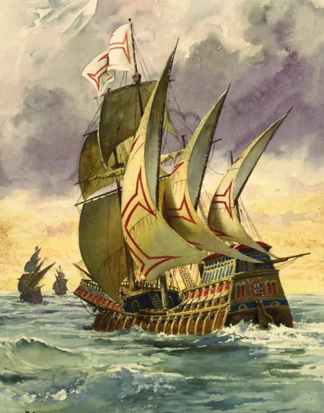
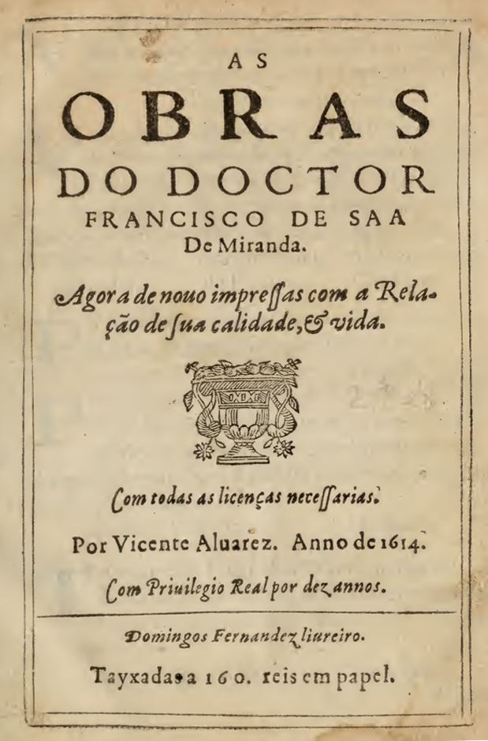

CLASSICISMO
O Classicismo foi um movimento literário e artístico que surgiu no século XVI, principalmente em Portugal e na Itália, influenciado pelo Renascimento. O período
resgatou os valores da Antiguidade Clássica (Greco-Romana),priorizando a harmonia, a proporção, o equilíbrio e a busca pela perfeição estética, em contraste
com os excessos da Idade Média.
.
Principais características do Classicismo
1. Racionalismo e Harmonia:Os autores classicistas buscavam o equilíbrio e a clareza, fundamentando suas obras na razão e na lógica. Eles valorizavam
a simetria e a proporcionalidade, além de uma visão idealizada do mundo.
.
2. Influência da Antiguidade Clássica:A literatura e as artes do Classicismo recuperaram elementos das culturas grega e romana, como mitologia, temas
Históricos e filosóficos, além das formas poéticas tradicionais, como o soneto. As referências ao mundo clássico permeiam as obras dessa época.
.
3. Universalismo:As obras classicistas buscavam tratar de temas universais, como o amor, a natureza, o destino, o poder e a ética. Havia uma intenção
de retratar esses assuntos de maneira atemporal e idealizada.
.
4. Antropocentrismo:Com a visão do ser humano como centro do universo, o Classicismo reforçou a ideia de que o homem é capaz de moldar seu destino
através da razão e do conhecimento. O ser humano e suas ações são os grandes protagonistas.
.
Contexto histórico
O Classicismo se desenvolveu durante o período do Renascimento, que começou no século XIV na Itália e se espalhou pela Europa nos séculos seguintes. Esse contexto foi
marcado pelo crescimento das cidades, o desenvolvimento do comércio e a descoberta de novos territórios. Em Portugal, o Classicismo surge no contexto das Grandes Navegações
e do auge da expansão marítima portuguesa.AUTORES E OBRAS
Luís de Camões: "Os Lusíadas"
Sá de Miranda: "As Obras"
Conclusão
O Classicismo marca a consolidação da literatura renascentista em Portugal, estabelecendo novos padrões estéticos e culturais. Foi uma fase de transição e inovação, onde
a influência da Antiguidade Clássica moldou uma nova forma de expressão artística e literária, baseada na racionalidade, na harmonia e no universalismo.Entre os principais
do Classicismo, destacam-se Luís de Camões, que imortalizou o heroísmo português, e Sá de Miranda, responsável pela introdução de novos gêneros e formas poéticas na literatura lusitana.